Ya tenemos nuestro proyecto de React configurado y listo para funcionar, el motivo por el cúal hemos invertido bastante teoría es porque toda esta configuración final será nuestra plantilla para proyectos con React. De esta manera no tendremos que volver a configurar todo esto de nuevo.
Lo que haremos a continuación es subir este proyecto a GitHub para tenerlo como plantilla y crear proyectos más adelante con ella.
Pero antes de esto, veremos los conflictos que podemos llegar a tener con el tiempo.
Este proyecto base, va a convivir durante el tiempo con todas las actualizaciones de todos los paquetes que vayan surgiendo, y al final esto puede llegar a ser un problema.
Durante todas esas actualizaciones puede que haya issues, puede que algo deje de funcionar, o que algo funcione de manera distinta.
Problema con dependencias
Si vemos el "package.json" podemos ver las vesiones de las dependencias que estamos utilizando.
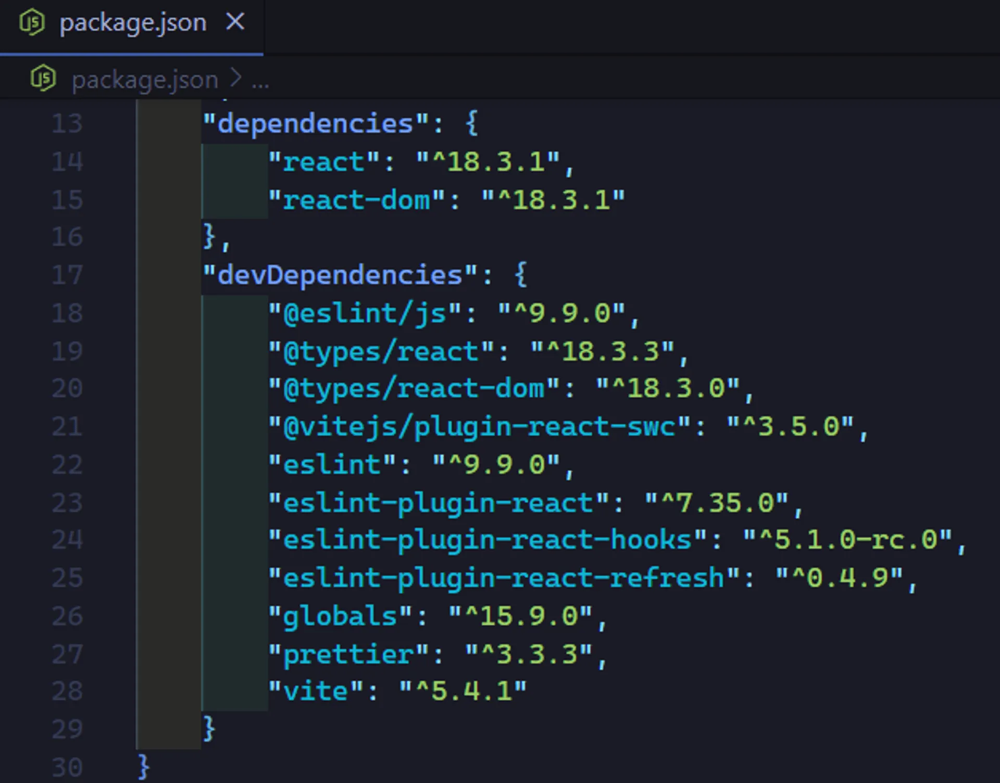
El problema de esto, es que, si después queremos actualizar nuestros paquetes, puede que nuestra configuración deje de funcionar, y esto no es único de nuestro proyecto si no de cualquier proyecto.
Lo que debemos hacer siempre, es fijar nuestras dependencias en cualquier proyecto que emprendamos.
Problema de no fijar las dependencias
Si nosotros vemos el "packgage.json" en las versiones de nuestras dependencias tenemos un caret o acento circunflejo (^).
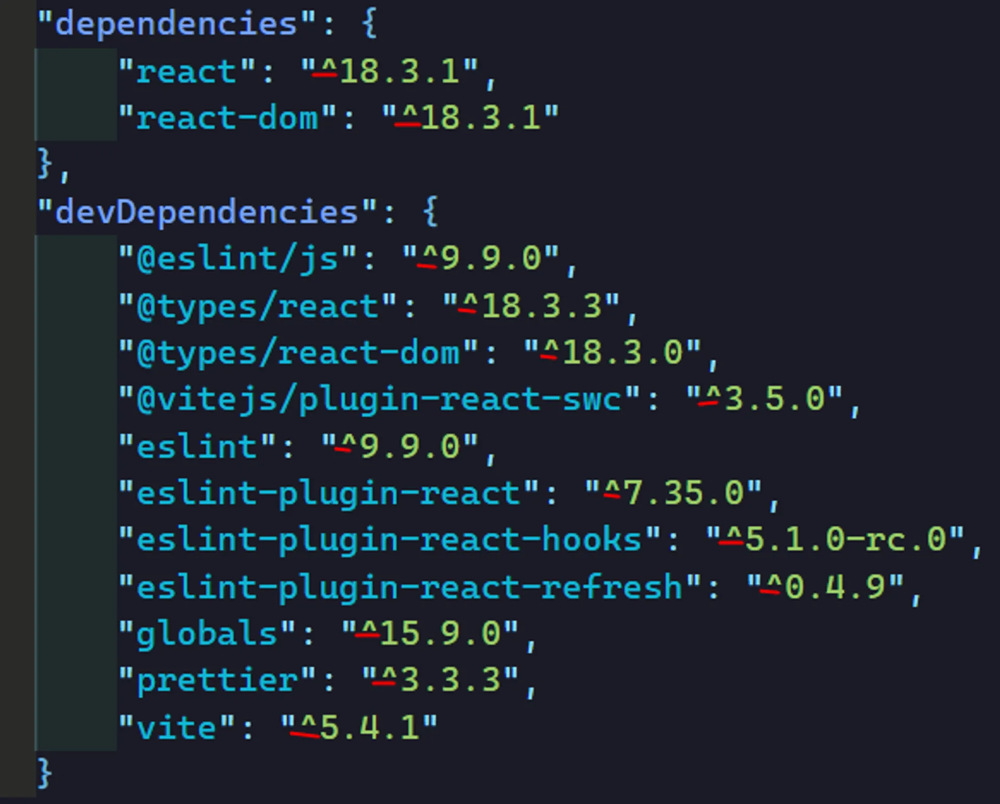
¿Qúe es este caret ^ ?
Cuando nosotros hacemos un "npm i" para instalar las dependencias de Vite o de cualquier otro proyecto, es cuando se agregan estos carets (^).
Lo que indican estos carets por ejemplo en el caso de react:
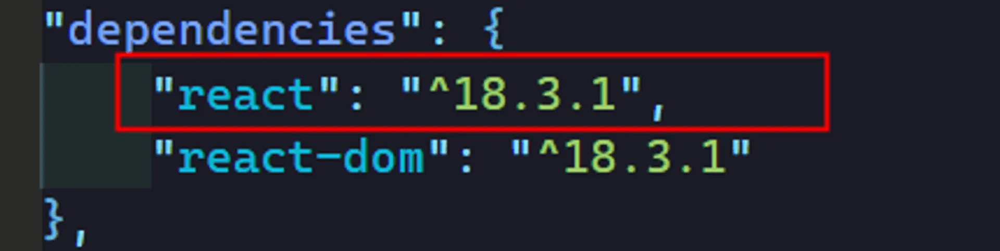
Indica que cuando nosotros hagamos un npm i , npm puede instalar esta versión "^18.3.1" o cualquier versión menor superior a esta.
¿Qué significa esto? Si por ejemplo en react sacan una versión "minor" "18.4.1", cuando yo haga un npm i aunque en el "package.json" del proyecto tenga "react": "^18.3.1", npm me instalará la siguiente versión que este publicada en los servidores de npm, siempre y cuando no sea una versión "major" , es decir, siempre y cuando no sea una versión 19.0.0.
Si no fijas tus dependencias puede ser que tú tengas una dependencia inclusive en una maquína, en otra tengas otra, y a lo mejor un compañero de equipo haya hecho un npm i despúes que tú y se le haya instalado la versión "18.4.1" y a lo mejor lo que a él le funciona a ti no.
Fijando las dependencias
Siempre debemos fijar nuestras dependencias, cuando hablamos de fijar las dependencias, nos referimos a dejar establecidas las dependencias en una sola versión para toda la vida del proyecto. Esto lo logramos quitando los carets.
Algo que debemos saber, cundo queramos instalar una dependencia y queremos que quede fijada de una vez, es decir que no se le agregue el caret, debemos de agregar el prefijo -E.
npm i nombreDependencia -E
En nuestro caso fijaremos las dependencias, quitando los carets de manera manual.
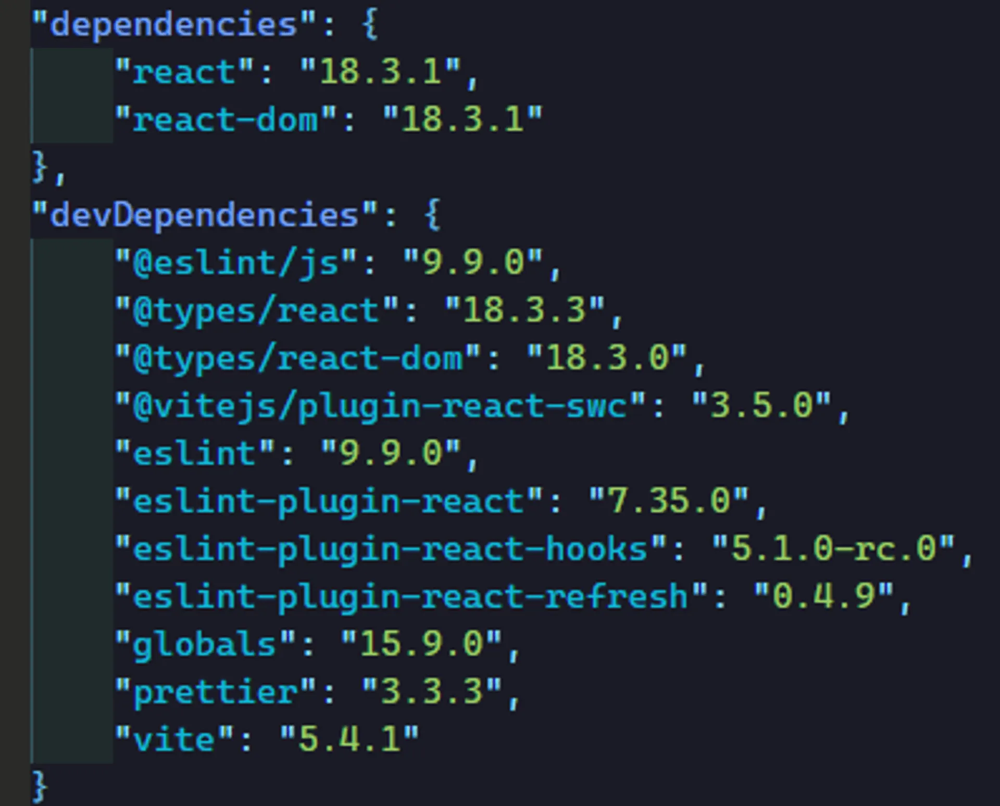
Ya hemos quitado los carets de manera manual.
Su ahora ejecutamos un npm i vamos a ver si alguno de estos paquetes realmente estaba en una versión superior a la que estaba marcada.
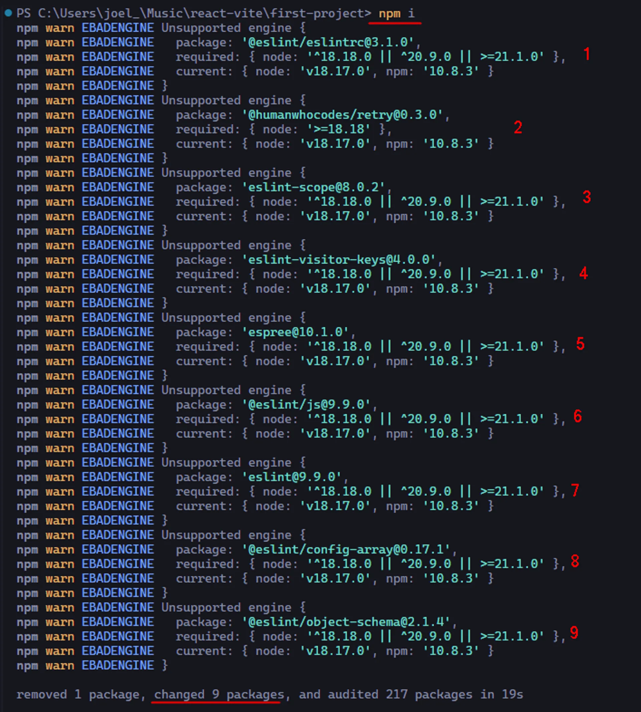
Podemos ver que efectivamente hay 9 paquetes que han cambiado, es decir había 9 paquetes que no estaban explícitamente puesta en el package.json.
Cuando ejecutamos npm i, cambiamos 9 paquetes, y recibimos varias advertencias sobre la incompatibilidad de la versión de Node.js con las versiones mínimas requeridas por algunos de esos paquetes.
Todos estos paquetes son componentes clave de ESLint o herramientas relacionadas que necesitan una versión más reciente de Node.js (>= 18.18.0). Actualmente, tenemos la versión 18.17.0, lo cual es muy cercana, pero no lo suficiente para evitar estos avisos.
Para solucionar esto debemos actualizar Node.js a una versión compatible (18.18.0 o superior) resolvería estas advertencias.
Con todo esto podemos imaginarnos la cantidad de problemas que puede haber.
Actualizar dependencias antes de subir repositorio
Para evitar problemas, antes de subir nuestro repositorio, actualizaremos las versiones de nuestras dependencias. Pero cabe aclarar que antes, debemos revisar la documentación de las dependencias para no romper nuestra configuración, es decir, siempre hay que actualizar pero con conocimiento, verificando antés que nada rompa nuestra app.
Una manera de actualizar las dependencias es utilizando el comando:
npx npm-check -u -E
Sirve para revisar el estado de las dependencias en tu proyecto de Node.js y asegurarte de que todo esté actualizado.
npx: Ejecuta paquetes de npm sin necesidad de instalarlos globalmente. En este caso, ejecuta npm-check.
npm-check: Es una herramienta que ayuda a revisar cuáles dependencias están desactualizadas, se pueden eliminar o actualizar, y cuáles tienen problemas. Muestra un resumen claro de lo que necesitas actualizar.
-u: Activa el modo interactivo, donde se abre una interfaz en la consola que te permite seleccionar manualmente (presionando space) qué dependencias deseas actualizar, en lugar de hacerlo automáticamente para todas.
-E: Este modificador asegura que cuando actualices dependencias, las nuevas versiones se guardarán con el número exacto en el archivo package.json, eliminando los rangos flexibles como ^ o ~. Por ejemplo, en lugar de "react": "^17.0.1", quedará "react": "17.0.1".
Al ejecutar este comando, en nuestro caso miraremos lo siguiente.
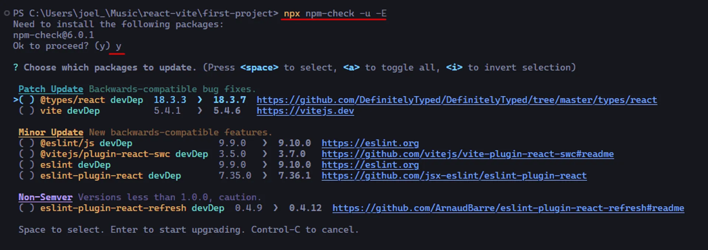
Ahora exmplicaremos la lista de sugerencias de actualización que nos sugiere.
1. Patch Update (Actualizaciones de parche)
Estas son actualizaciones menores que incluyen correcciones de errores, pero no introducen nuevas características ni rompen compatibilidad.
@types/react: Actualización de 18.3.3 a 18.3.7. Son solo tipos para TypeScript, por lo que es una actualización que no afectará el funcionamiento de nuestro proyecto, pero sí podría mejorar la validación de tipos.
vite: Actualización de 5.4.1 a 5.4.6. Esta versión corrige errores pero mantiene la compatibilidad, así que es seguro aplicarla.
2. Minor Update (Actualizaciones menores)
Estas actualizaciones incluyen nuevas funcionalidades compatibles con versiones anteriores, sin romper la compatibilidad.
@eslint/js: Actualización de 9.9.0 a 9.10.0. Nuevas funciones para las reglas de ESLint que podrían ofrecer más opciones en el análisis de código.
@vitejs/plugin-react-swc: De 3.5.0 a 3.7.0. Agrega nuevas funcionalidades para integrar React con Vite usando SWC.
eslint: De 9.9.0 a 9.10.0. Nuevas reglas o mejoras en la herramienta de análisis estático de código.
eslint-plugin-react: De 7.35.0 a 7.36.1. Mejora en las reglas específicas para React.
3. Non-Semver Versions (Versiones no semánticas)
Estas actualizaciones son para versiones que aún están por debajo de la versión 1.0.0. Esto significa que aún podrían introducir cambios importantes, aunque sin romper compatibilidad.
eslint-plugin-react-refresh: De 0.4.9 a 0.4.12. Es una actualización dentro de una versión aún en desarrollo, por lo que podría haber mejoras y correcciones, pero podría no ser completamente estable.
Sabiendo esto, actualizaremos las siguientes dependencias.
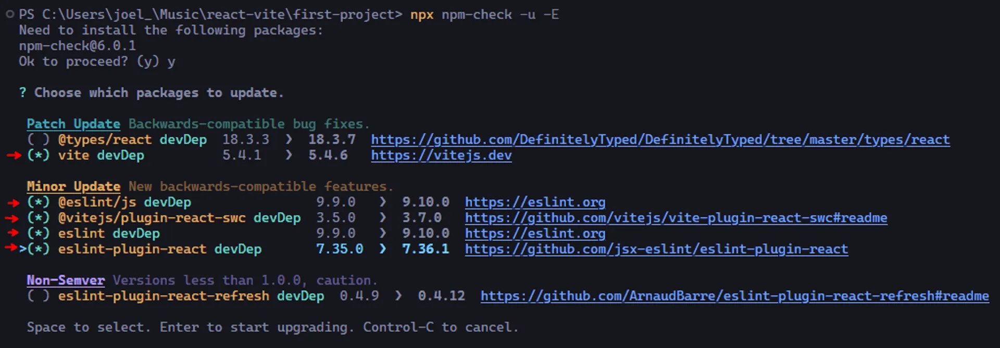
Una vez actualizadas nuestras dependencias, para que funcionen correctamente utilizaremos una versión de NodeJS requerida para las dependencias.
En nuestro caso utilizamos NodeJS con "fnm" que nos permite tener instaladas diferentes versiones de NodeJS, en nuestro caso instalaremos la versión "20.17.0" que actualemente es actualmente la vesión más reciente en este momento (Sep/2024).
Instalamos nuestra versión de Node con el comando:
fnm install 20.17.0
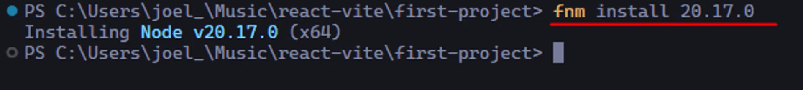
Ahora procedemos a establecer la versión por defecto con el comando:
fnm alias 20.17.0 default
Y mostraremos la lista de versiones de Node para ver que ya tenemos una versión establecida por defecto.
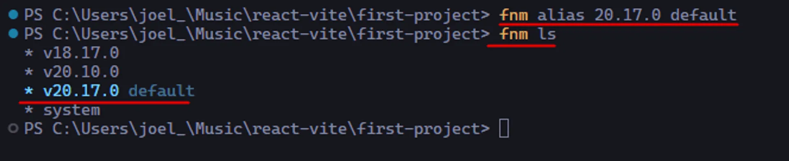
En dado caso tengamos un problema con esta versión podemos escoger otra versión por defecto que sea más estable.
Ahora para validar que la actualización de nuestras dependencias son correctas, siempre debemos subir el archivo "package-lock.json", es así porque si hemos actualizado una dependencia y el package-lock.json cambia, podemos detectar que hay alguna versión que no está exactamente funcionando como deberia, así que debemos de utilizarlo siempre como respaldo y al ser un archivo autogenerado, no nos interesaría que nadie lo formatiase sin querer, es decir, no queremos ocupar Prettier sobre el.
Así que agregaremos el "package-lock.json" al archivo ".prettierignore" para que no actue sobre el.
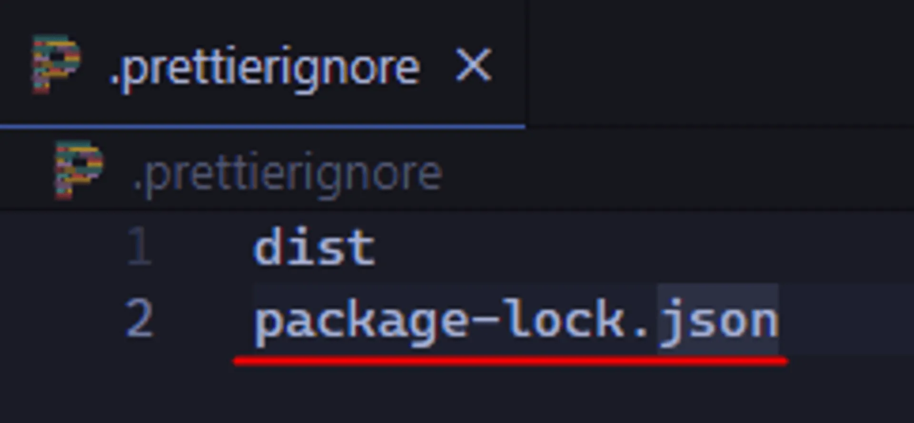
Una vez que hemos terminado de quitar los carets, de actualizar las dependencias y demás, lo que haremos es subir nuestro proyecto al repositorio en GitHub.
Subiendo proyecto a GitHub
En la consola de nuestro proyecto inicializaremos "Git" y ejecutaremos los siguientes comandos.
git init
git add .
git commit -m "First commit"
Ahora crearemos nuestro repositorio en GitHub.
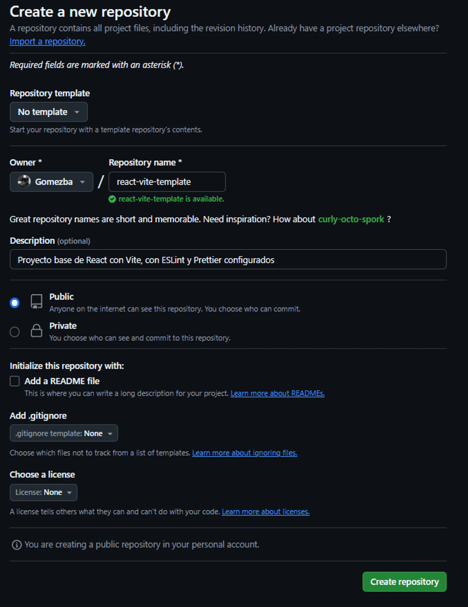
Copiamos los siguientes comandos.
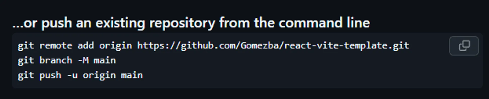
Los pegamos en la consola de nuestro proyecto.
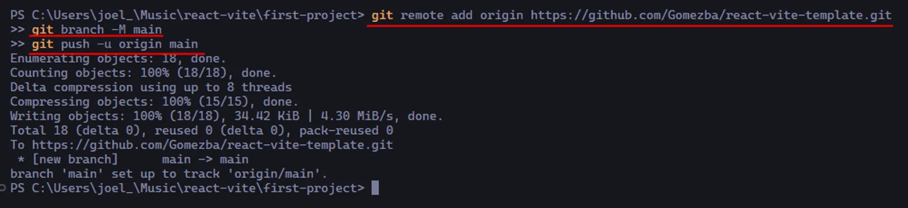
Ya tenemos nuestro repositorio subido en GitHub
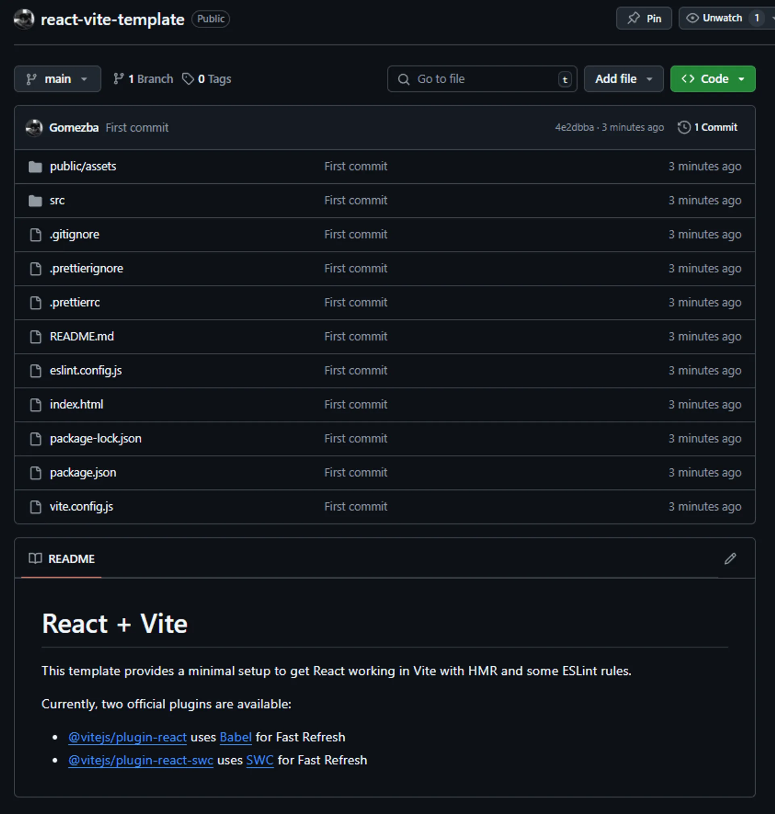
Ahora estableceremos nuestro repositorio como plantilla.
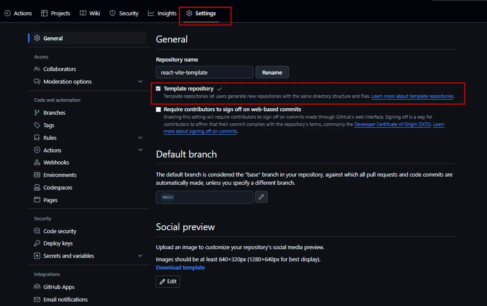
Ahora ya podemos crear repositorios a través de esta plantilla.